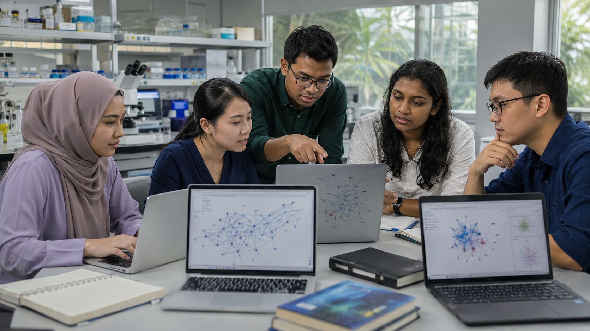

COLLECTION 01
Discovery & Databases
Search authoritative literature collections and use research-focused discovery tools to locate relevant evidence.

DISCOVER TRUSTED LITERATURECOLLECTION 01
Search authoritative literature collections and use research-focused discovery tools to locate relevant evidence.

DISCOVER TRUSTED LITERATURE